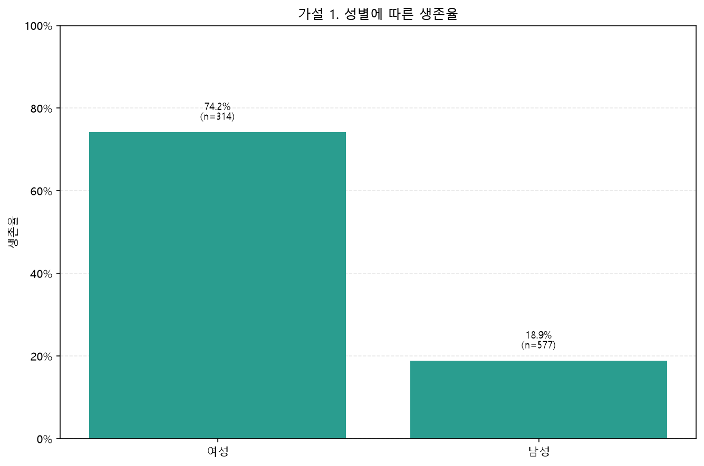
가설 1 · 성별
여성 314명 중 233명이 생존했지만 남성 577명 중 생존자는 109명이었다. 성별은 가장 큰 생존율 차이를 보인 변수다.
DATA ANALYSIS FINAL REPORT
승객 891명의 성별, 객실 등급, 나이, 운임, 가족 규모와 탑승 정보를 이용해 생존율 차이를 탐색한 최종 보고서
전체 승객의 생존율은 38.4%였다. 가장 큰 차이는 성별과 객실 등급에서 나타났으며, 가족 규모·운임·객실 정보 유무도 생존율과 뚜렷한 관련을 보였다.
| 구분 | 내용 |
|---|---|
| 데이터 크기 | 891행 × 12열, 한 행은 승객 1명을 의미 |
| 목표 변수 | Survived: 0은 사망, 1은 생존 |
| 주요 설명 변수 | Sex, Pclass, Age, Fare, SibSp, Parch, Cabin, Embarked, Ticket, Name |
| 결측치 | Age 177개(19.9%), Cabin 687개(77.1%), Embarked 2개(0.2%) |
| 가족 규모 | SibSp + Parch + 1로 계산 |
| 분석 방식 | 집단별 생존 인원, 전체 인원, 생존율을 비교하는 기술통계 및 시각화 |
주의: 나이 분석에서는 Age가 비어 있는 177명을 제외했다. Cabin은 결측치가 매우 많으므로 “객실 정보 있음” 자체보다 객실 등급이나 기록 상태를 대신 나타내는 변수일 수 있다.
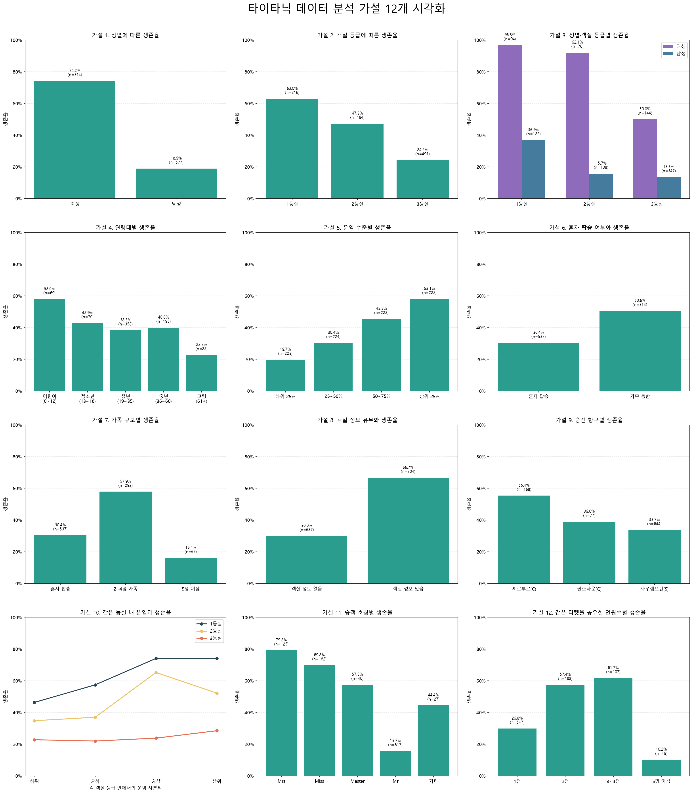
| 번호 | 가설 | 주요 결과 | 판단 |
|---|---|---|---|
| 1 | 여성의 생존율이 남성보다 높다. | 여성 74.2%, 남성 18.9% | 지지 |
| 2 | 객실 등급이 높을수록 생존율이 높다. | 1등실 63.0%, 2등실 47.3%, 3등실 24.2% | 지지 |
| 3 | 객실 등급의 영향은 성별에 따라 다르다. | 여성은 1·2등실에서 90% 이상, 남성은 모든 등실에서 더 낮음 | 지지 |
| 4 | 어린 승객의 생존율이 성인보다 높다. | 0~12세 58.0%, 61세 이상 22.7% | 부분 지지 |
| 5 | 운임이 높을수록 생존율이 높다. | 운임 하위 25% 19.7%, 상위 25% 58.1% | 지지 |
| 6 | 혼자 탑승한 승객과 가족 동반 승객의 생존율이 다르다. | 혼자 30.4%, 가족 동반 50.6% | 지지 |
| 7 | 가족 규모가 지나치게 크면 생존율이 낮다. | 2~4명 57.9%, 5명 이상 16.1% | 지지 |
| 8 | 객실 번호가 기록된 승객의 생존율이 높다. | 정보 있음 66.7%, 없음 30.0% | 지지 |
| 9 | 승선 항구에 따라 생존율이 다르다. | C 55.4%, Q 39.0%, S 33.7% | 지지 |
| 10 | 같은 등실에서도 운임이 높을수록 생존율이 높다. | 1·3등실은 대체로 상승하나 2등실은 최상위 구간에서 하락 | 부분 지지 |
| 11 | 승객 호칭에 따라 생존율이 다르다. | Mrs 79.2%, Miss 69.8%, Mr 15.7% | 지지 |
| 12 | 티켓을 공유한 집단의 규모에 따라 생존율이 다르다. | 3~4명 61.7%, 1명 29.8%, 5명 이상 10.2% | 지지 |

여성 314명 중 233명이 생존했지만 남성 577명 중 생존자는 109명이었다. 성별은 가장 큰 생존율 차이를 보인 변수다.
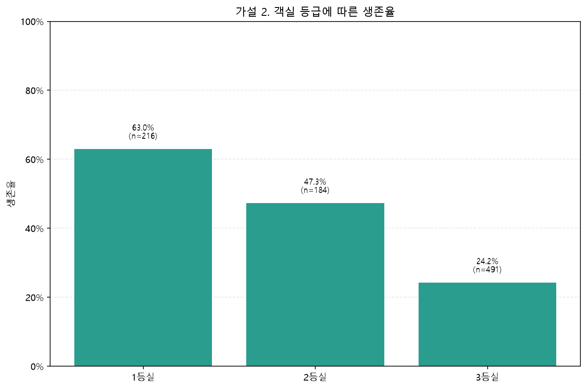
1등실에서 3등실로 내려갈수록 생존율이 낮아졌다. 객실 위치, 구조 시설 접근성, 승객의 사회경제적 조건 등이 함께 반영됐을 가능성이 있다.
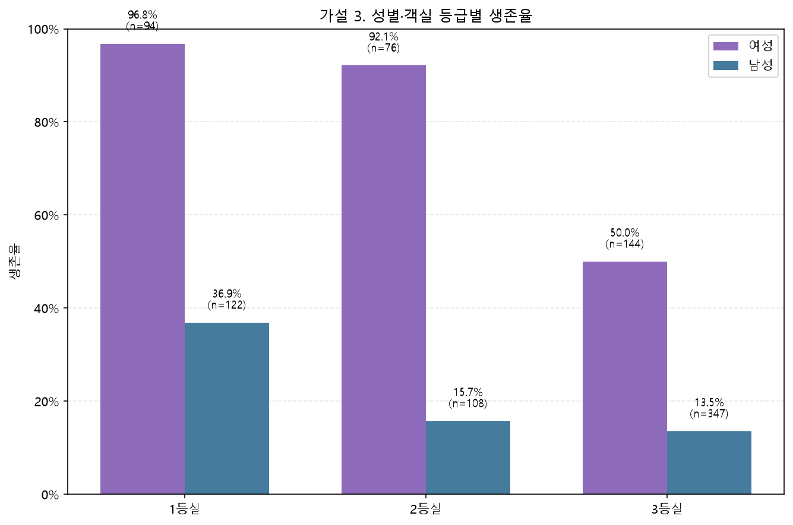
여성은 1등실 96.8%, 2등실 92.1%, 3등실 50.0%였다. 남성은 각각 36.9%, 15.7%, 13.5%로 성별 차이가 모든 등급에서 나타났다.
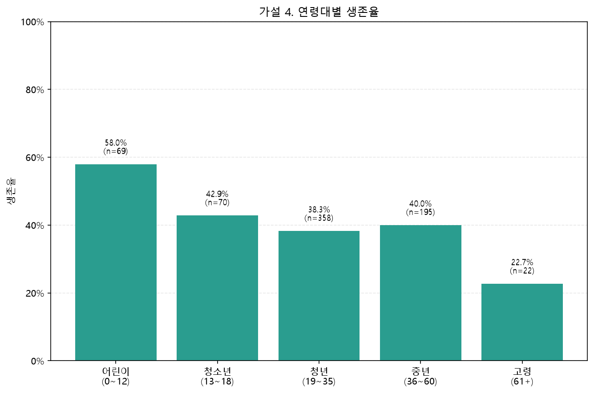
0~12세의 생존율이 58.0%로 가장 높고 61세 이상은 22.7%로 가장 낮았다. 그러나 중간 연령대는 단순히 나이가 증가할수록 계속 낮아지는 형태는 아니다.
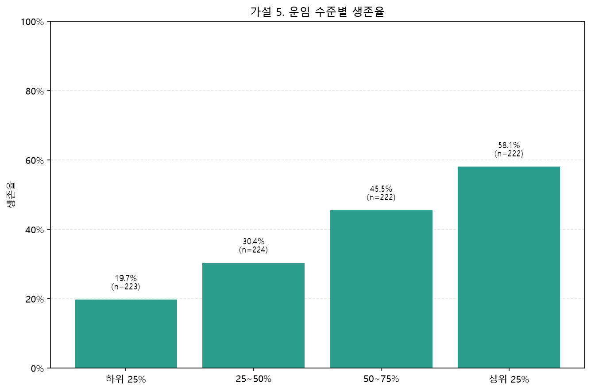
운임 사분위가 높아질수록 생존율이 19.7%에서 58.1%로 증가했다. 운임은 객실 등급과 관련이 크므로 두 변수의 효과가 섞여 있을 수 있다.
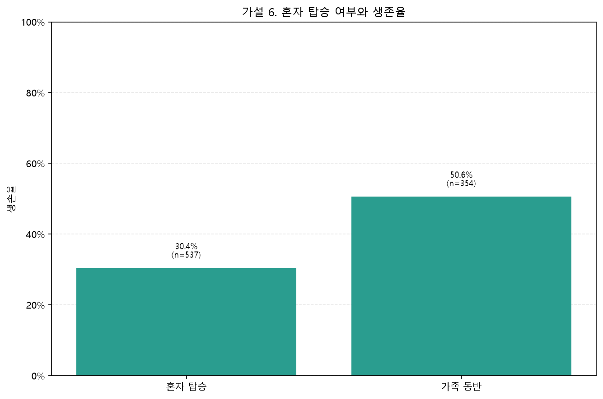
가족 동반 승객의 생존율은 50.6%로 혼자 탑승한 승객의 30.4%보다 높았다. 동행 가족의 존재가 비상 상황에서 도움이 되었을 가능성이 있다.
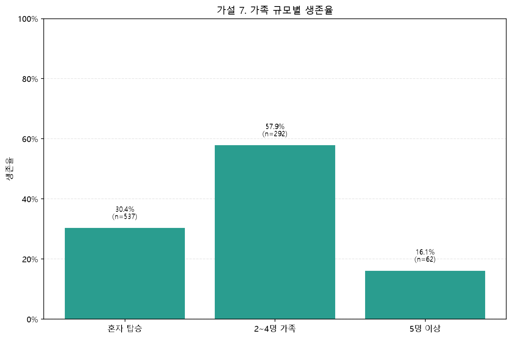
2~4명 가족의 생존율이 57.9%로 가장 높았다. 혼자 탑승한 경우는 30.4%, 5명 이상 대가족은 16.1%로 가족 규모와 생존율은 역 U자형 관계를 보였다.
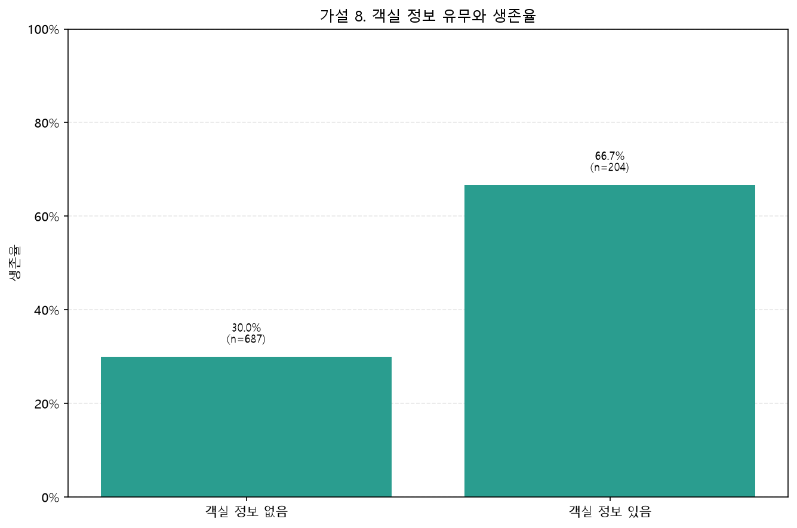
객실 정보가 있는 승객의 생존율은 66.7%, 없는 승객은 30.0%였다. 다만 Cabin 결측률이 77.1%이므로 객실 정보 유무를 직접적인 원인으로 해석하면 안 된다.
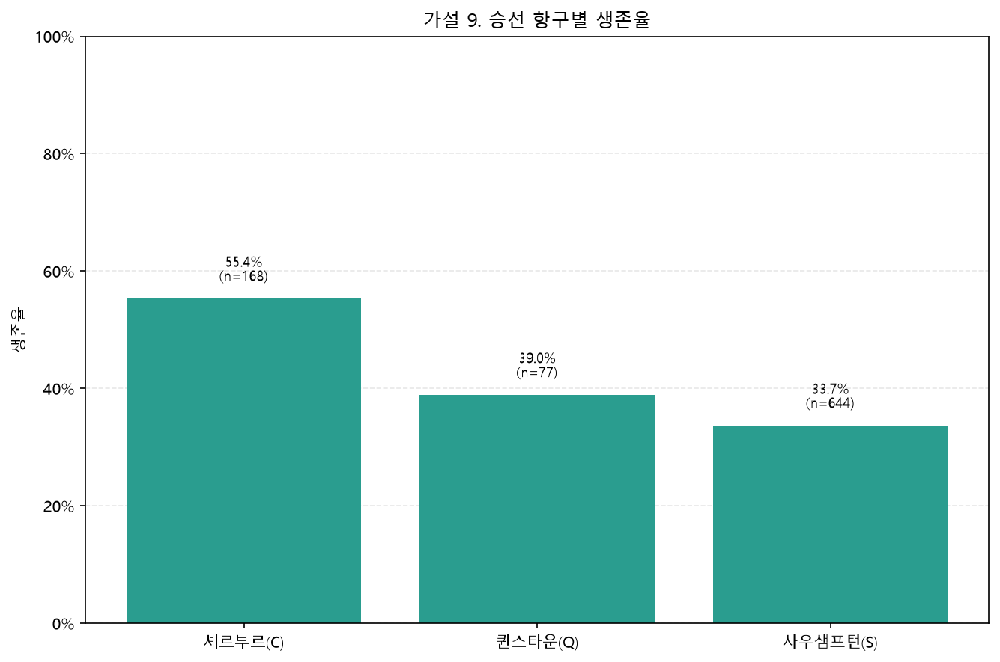
셰르부르(C) 승객의 생존율이 55.4%로 가장 높았다. 이는 항구 자체보다는 항구별 객실 등급·운임·성별 구성의 차이 때문일 가능성이 있다.
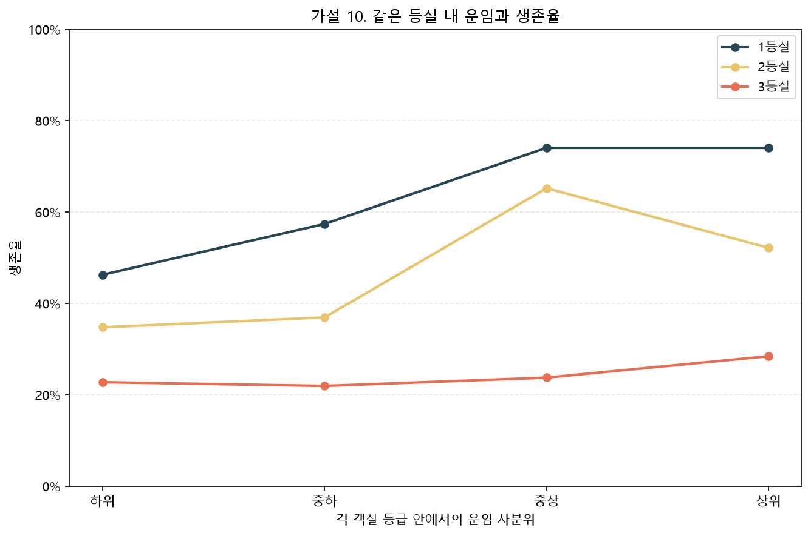
1등실은 하위 운임 46.3%에서 상위 운임 74.1%로 높아졌고, 3등실도 소폭 상승했다. 2등실은 중상위 구간에서 가장 높아 완전한 직선 관계는 아니었다.
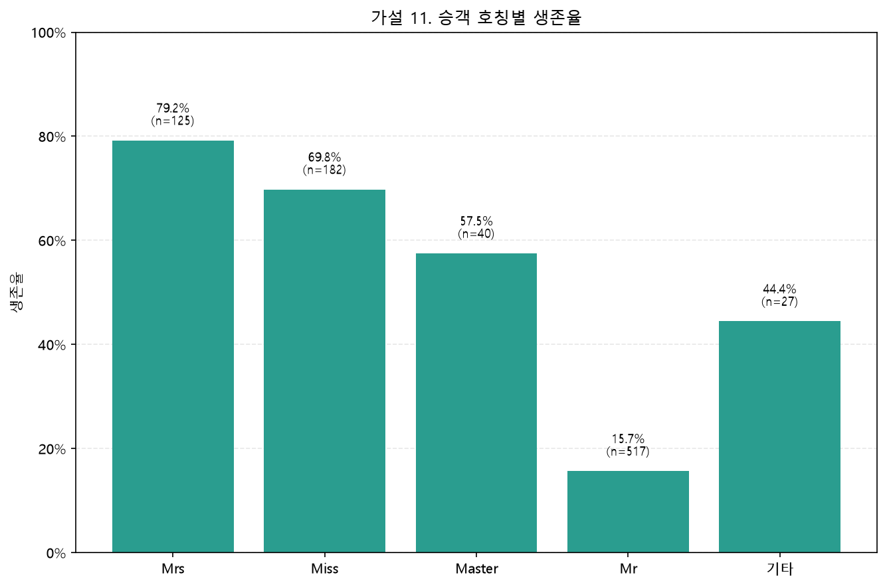
Mrs와 Miss의 생존율은 각각 79.2%, 69.8%였지만 Mr는 15.7%였다. 호칭에는 성별, 결혼 여부, 나이와 사회적 위치 정보가 함께 포함돼 있다.
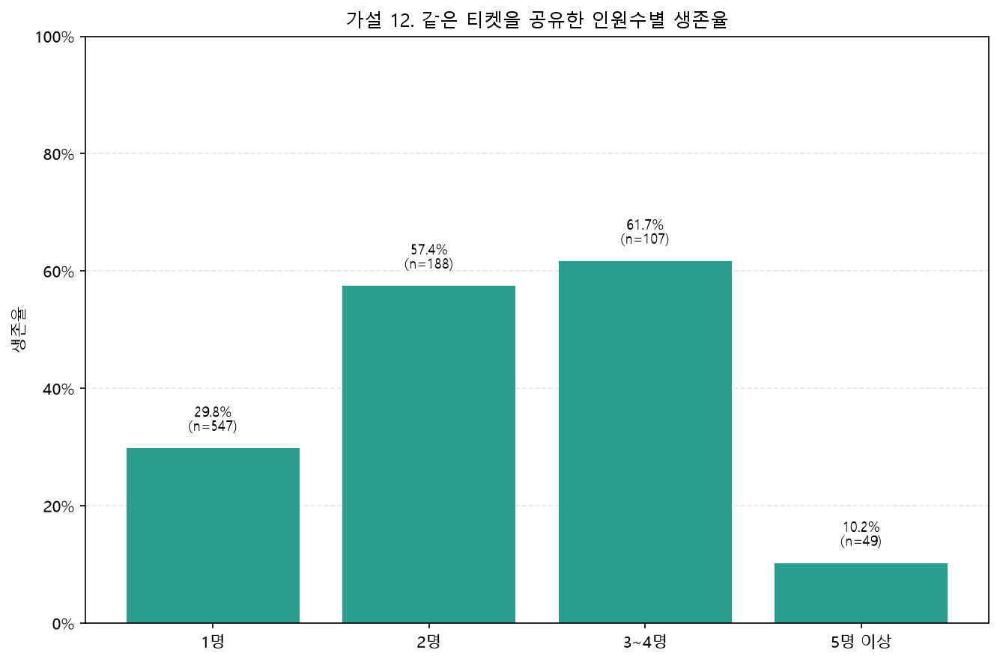
3~4명이 같은 티켓을 사용한 집단의 생존율이 61.7%로 가장 높고, 5명 이상은 10.2%로 가장 낮았다. 가족 규모 분석과 비슷하게 적정한 동행 규모가 유리한 패턴이다.
타이타닉 생존 여부는 한 가지 조건이 아니라 성별, 객실 등급, 경제적 조건, 나이와 동행 형태가 함께 작용한 결과로 보인다.
데이터에서 가장 강하게 나타난 특징은 여성과 상위 등실 승객의 높은 생존율이다. 가족이나 티켓 동행은 적당한 규모일 때 생존율이 높았지만, 대규모 집단에서는 오히려 크게 낮아졌다. 따라서 “가족이 있으면 무조건 유리하다”거나 “운임이 높으면 반드시 생존한다”는 단순한 결론보다 여러 조건의 조합을 함께 살펴보는 것이 적절하다.
다음 단계에서는 성별·객실 등급·나이·운임·가족 규모를 동시에 포함한 로지스틱 회귀 분석을 실시해 각 변수의 독립적인 영향과 통계적 유의성을 확인할 수 있다.
| 파일 | 역할 |
|---|---|
titanic.csv | 원본 승객 데이터 |
titanic_data_description.md | 데이터와 컬럼 설명 |
survival_pie_chart.py | 성별·객실 등급별 6개 파이차트 생성 |
family_size_survival_chart.py | 가족 규모별 생존·사망 비율 차트 생성 |
hypothesis_visualizations.py | 12개 가설의 개별 차트와 종합 대시보드 생성 |
hypothesis_charts/ | 가설별 PNG 이미지 12개 |
hypothesis_dashboard.png | 12개 가설 종합 시각화 |